The slide of the lecture is on the left, the same figure or table on the right, computed in the browser from the same data. The ▶ button moves the parameter step by step; the tables and worked examples are recomputed with it. Abbreviations: ACF (autocorrelation function), VR (variance ratio), ADF (augmented Dickey–Fuller), PP (Phillips–Perron), KPSS (Kwiatkowski–Phillips–Schmidt–Shin), LB (Ljung–Box), CD (Chow–Denning), OLS (ordinary least squares), GARCH (generalised autoregressive conditional heteroskedasticity).
Predictability of Prices · Random Walk Hypotheses · White Noise and the Autocorrelation Function · Testing for Autocorrelation · Unit Roots: Prices against Returns · The Variance-Ratio Test · Efficiency across Markets and over Time · Semi-Strong Form, Strong Form and Anomalies
Predictability of Prices
Question for the Room: Which Path Is the S&P 500?
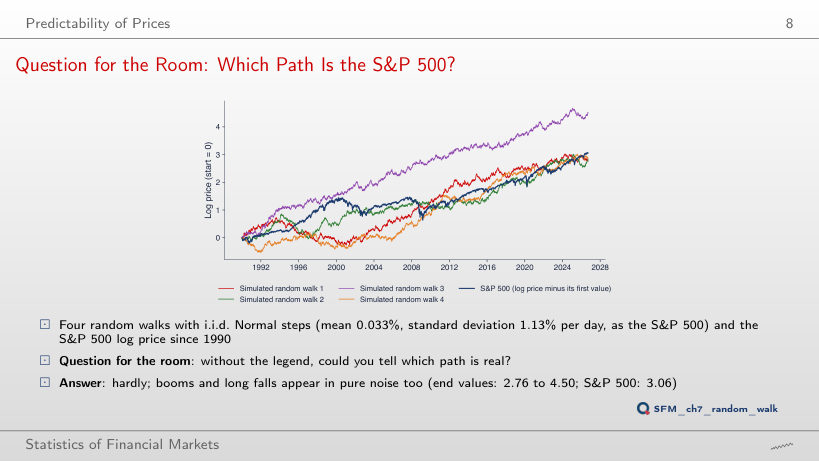
Answer
Three. At the end of 2008 the S&P 500 is at 0.91 (log price minus its first value), the simulated walks at 1.12, 1.24, 2.69 and 0.65. In September 2026 only one (4.50) is above the S&P 500 (3.06). The falls of 2000–2002 and 2008 have the size of episodes that pure noise also produces: a single path does not separate the S&P 500 from a random walk.
Yesterday's Return and Today's Return
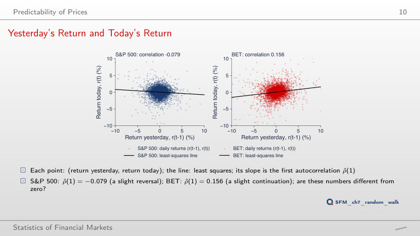
Answer
0.033, almost five times smaller; at lag 3 it is −0.008, at lag 5 0.031, at lag 10 0.004. For the S&P 500 the lag-2 correlation is −0.004. Almost all the dependence of the BET returns sits at lag 1, as thin trading produces: news enters the index over two days.
Random Walk Hypotheses
Worked Example: Risk as a Function of the Horizon
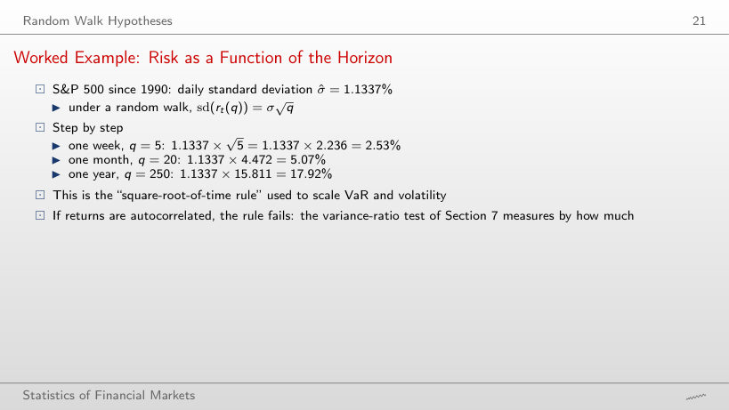
Standard deviation of q-day returns: the square-root rule and the data
Worked example: the square-root-of-time rule
Answer
Smaller: 15.66%, that is 0.874 of the rule's value. The daily S&P 500 returns are slightly negatively autocorrelated (ρ̂(1) = −0.079, VR(250) = 0.785), so daily moves partly cancel over time. The BET, with ρ̂(1) = 0.156, shows the opposite: 35.91% against 23.38% (1.54 times). The rule assumes uncorrelated returns; scaling VaR or volatility by √q inherits this assumption.
White Noise and the Autocorrelation Function
Gaussian White Noise and Its Sample ACF
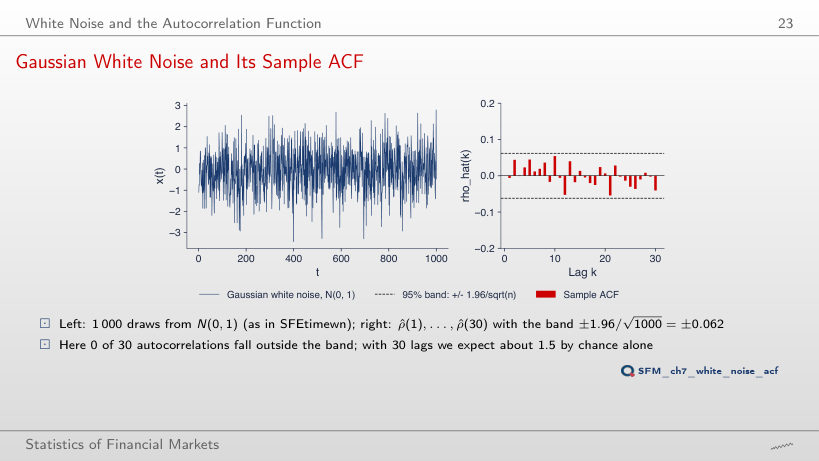
Answer
One: the largest in absolute value is 0.223. With 30 lags we expect 1.5 exceedances by chance alone, at any n: the band widens as 1/√n, and the sample autocorrelations of white noise grow at the same rate. At n = 400 one lies outside as well, at the other values of n none.
Theoretical and Sample ACF of Six Processes
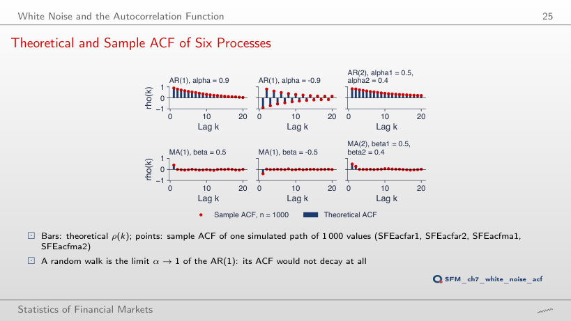
Answer
Up to 0.40 (the largest deviation over lags 1–20), against 0.08 at n = 1,000. The white-noise band for n = 50 is ±0.28 (1/√50 = 0.14), but the deviation is larger, because the variance of ρ̂(k) of a persistent process exceeds 1/T. For the MA(2), the largest deviation is 0.19 at n = 50 and 0.06 at n = 1,000.
The ACF of Daily Returns
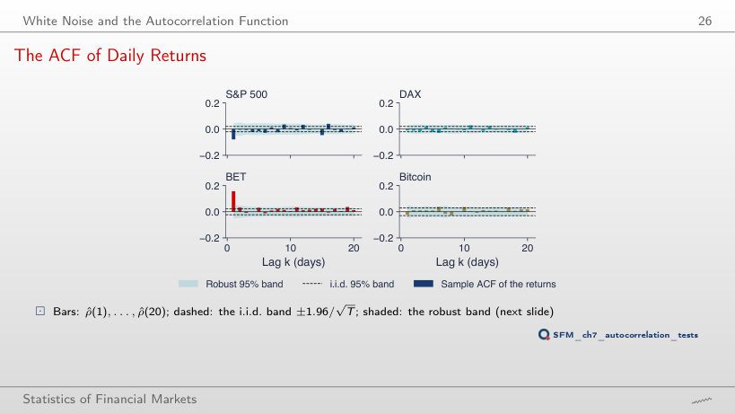
Worked example: the robust band of the ACF
Answer
It becomes more negative: −0.142, against −0.079 from 1990, with 13 lags outside the i.i.d. band and 7 outside the robust band. On the sample that starts in 2022, ρ̂(1) is only −0.015. On rolling windows (section "Efficiency across Markets and over Time") the S&P 500 reversals are strongest in crises: the sample from 2016 includes 2020, the one from 2022 does not.
Autocorrelation of Returns and of Absolute Returns
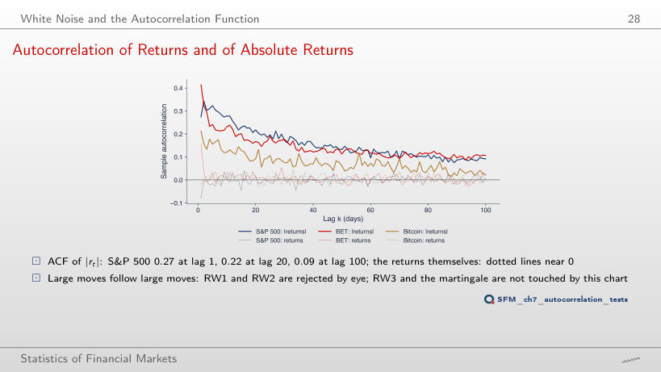
Answer
It falls: 0.039 for d = 2, against 0.092 for d = 1; at lag 1 it rises slightly (0.311 against 0.275). High powers give weight to a few extreme days, and their autocorrelation dies out faster. For every d the size of the returns stays correlated, so RW1 and RW2 are rejected.
Testing for Autocorrelation
Worked Example: Ljung–Box Step by Step
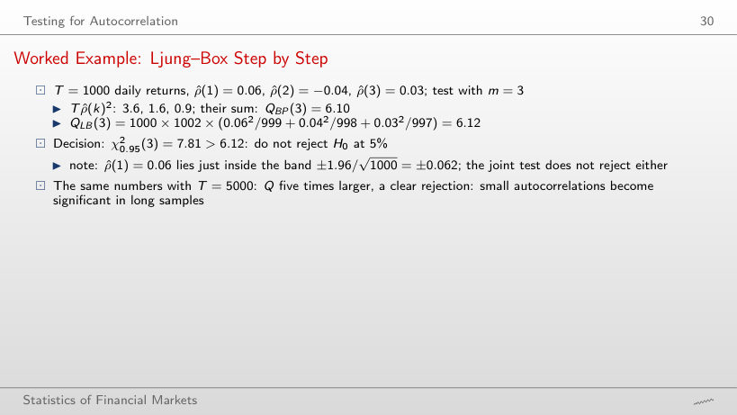
Worked example: Box–Pierce and Ljung–Box
Answer
From T = 1,500 (in steps of 500): QLB(3) = 9.17 > 7.81, p = 0.027. The statistic grows almost in proportion to T (30.52 at T = 5,000); the exact threshold is around T = 1,280. The autocorrelations are the same; with more data they are estimated more precisely and separate from zero. In long samples, small autocorrelations become significant without being larger.
Autocorrelation Tests on Real Data
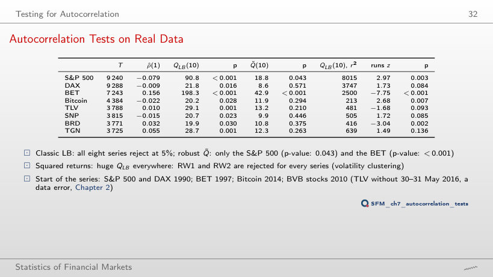
Tests on the daily returns (p-value below 0.05 in red)
Worked example: QLB and Q̃ on real data
Answer
Only for the BET (Q̃(30) = 67.9 > 43.77). The S&P 500 no longer rejects: Q̃(30) = 39.7, because its lag-1 autocorrelation is diluted among 29 nearly zero lags; the slide says the same: a larger m dilutes a short-lived effect. The classical QLB rejects at m = 30 for five series, with a χ² distribution that ignores volatility clustering.
The Runs Test
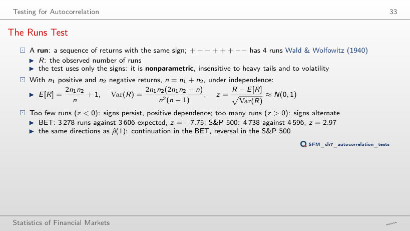
Worked example: the runs test
Answer
Only the BET one, much weaker: z = −2.03, against 0.06 for the S&P 500. The BET signs persist in recent years too, but much less than over the whole sample; for the S&P 500 the alternation of signs disappears. From 2022, BRD has z = −3.79.
Unit Roots: Prices against Returns
Practical Consequence: Spurious Regression
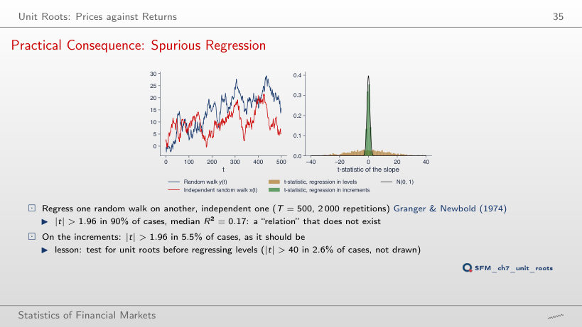
Answer
No, it rises: 92.7% at T = 1,000 and 94.5% at T = 2,000 (77.3% at T = 100); |t| > 40 occurs in 21.6% of the regressions at T = 2,000. In the regression in levels the t-statistic grows with T, so more data make the spurious relation more convincing. The median R² stays between 0.16 and 0.18. In increments, the share stays between 5.1% and 6.0% for every T.
The Augmented Test and a Worked Example
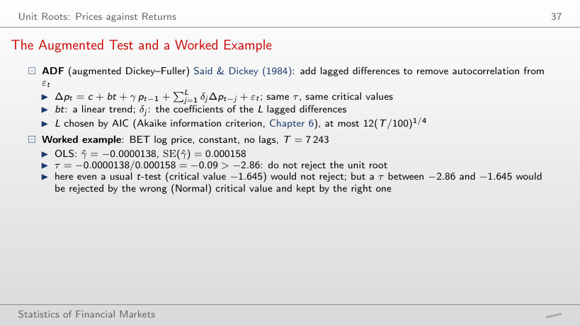
Worked example: the Dickey–Fuller regression
Answer
No. The lowest τ with a constant is −1.41 (Bitcoin, L = 20), far from −2.86; for TLV, SNP, BRD and TGN τ is even positive. Prices grow over time, so the right specification has a constant and a trend: with it, TLV falls below −3.41 at 12 of the 16 values of L (τ = −3.46 at L = 20, the order chosen by AIC).
The BET: Log Price and Returns
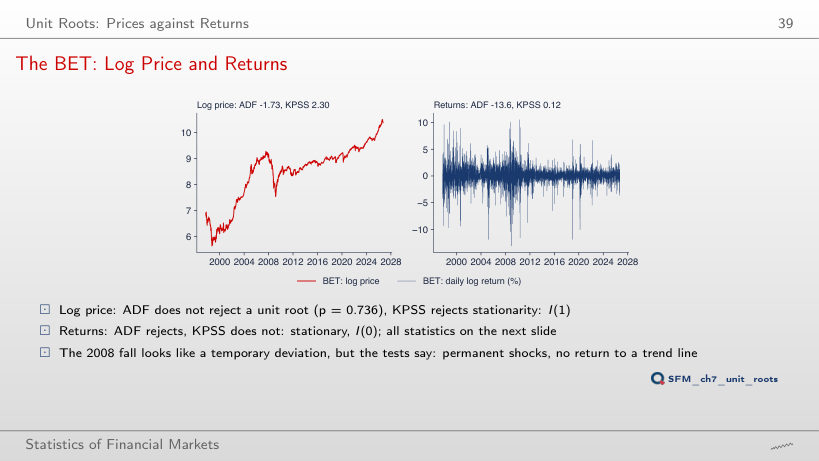
Answer
TLV: ADF = −3.46 < −3.41 (p = 0.044) rejects the unit root, and KPSS = 0.57 > 0.146 rejects trend stationarity. The tests contradict each other: an inconclusive case, not evidence of reversion to a trend. For the other seven series ADF does not reject and KPSS rejects. The returns are I(0) for all eight.
Unit-Root Tests on Prices and Returns
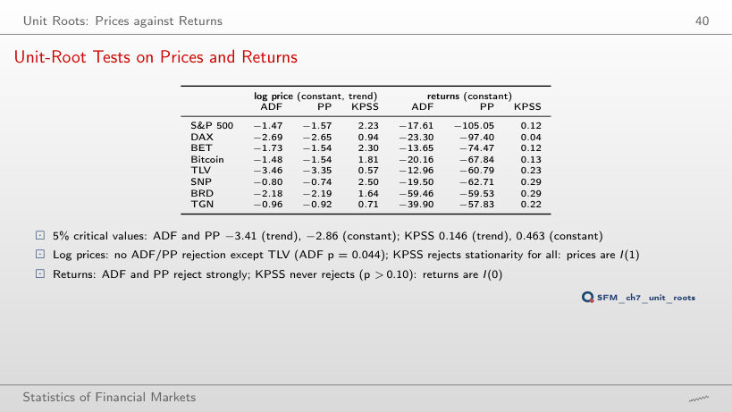
Test statistics (in red: rejection at 5%)
Worked example: the KPSS statistic on the log price
Answer
86.0. An integrated price has large positive autocovariances; without them, λ̂² is just the variance of the residuals and understates the long-run variance by a factor of several dozen. The statistic falls as l grows, but at l = 80 it is still 1.09 > 0.146. On returns, KPSS stays below 0.463 for every l: the conclusion I(1) for prices and I(0) for returns does not depend on the bandwidth.
The Variance-Ratio Test
Worked Example: VR from the ACF of the S&P 500
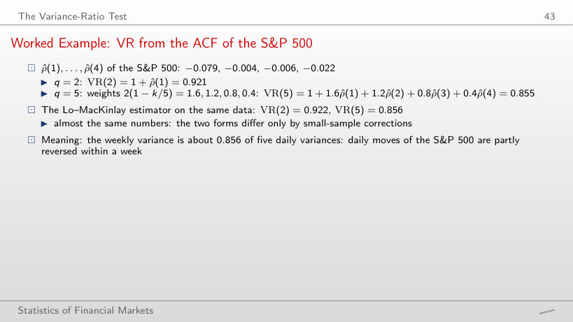
Worked example: VR from the ACF
Answer
Very little: 0.768 from the ACF and 0.767 with the Lo–MacKinlay estimator, a difference of 0.0005. For the BET at q = 20: 1.514 and 1.517. The two forms differ only by small-sample corrections, which matter little with T = 9,240 and q = 20.
Lo and MacKinlay (1988): Estimator and Tests
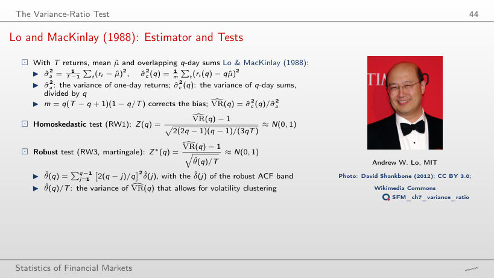
Worked example: Z(q) and Z*(q)
Answer
No: Z*(40) = −1.81, although Z(40) = −3.70 still rejects. At q = 40, Z* rejects only for the BET. The ratio Z/Z* stays between 2.0 and 2.3 at all horizons: volatility clustering doubles the standard error of the estimated VR(q), and Z(q) ignores it.
The Need for a Robust Test: a Monte Carlo Study
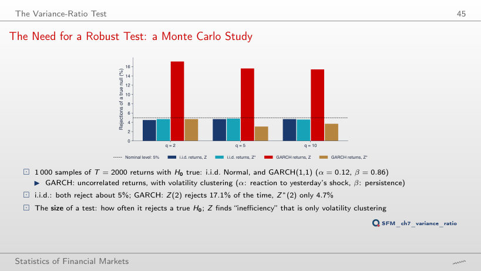
Answer
In 9.0% of the cases; at α = 0.06 in 6.2%, at α = 0 in 4.8%. The distortion grows fast as α + β approaches 1 (0.95 at α = 0.09, 0.98 at α = 0.12), because volatility becomes very persistent. Z*(2) stays between 4.3% and 4.9% for every α.
Variance Ratios for Horizons of 2 to 40 Days
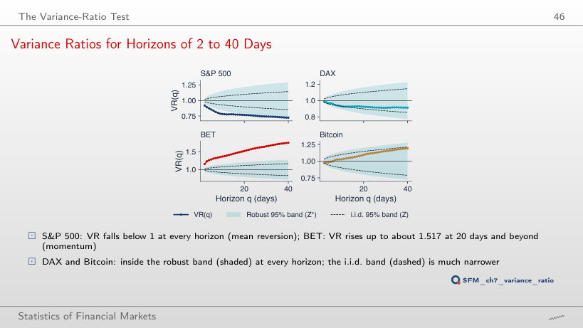
Answer
No: the BET VR(40) falls to 1.193 and no Z*(q) exceeds 1.96. The BET momentum comes from the early years (1997–2006, ρ̂(1) = 0.270). From 2010 the S&P 500 rejects at a single horizon of 39, with VR(40) = 0.663, below the value from 1990: the mean reversion remains, but the robust band widens with the shorter sample.
Variance Ratios and Robust Tests
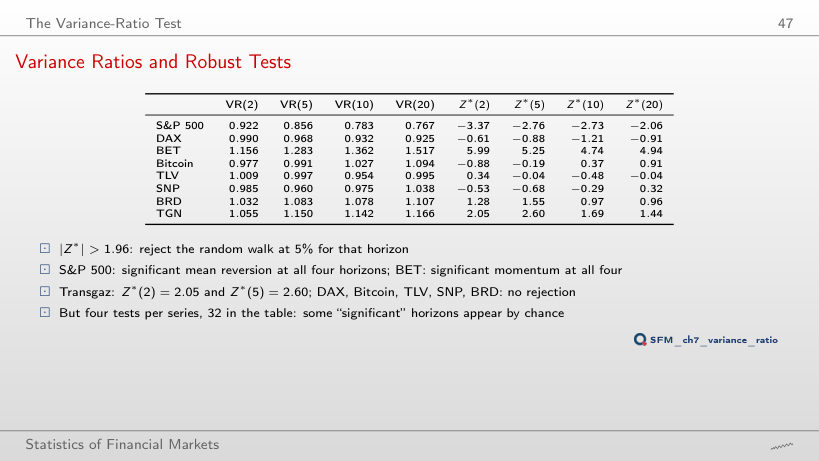
Answer
Three: the S&P 500 at q = 2 and Transgaz at q = 2 and 5 (for Transgaz the sample starts in 2010 anyway). The BET no longer rejects at any horizon. With the homoskedastic Z there would be 13, because Z ignores volatility clustering. With 32 independent tests at 5% we would expect 1.6 false rejections on average.
Joint and Automatic Tests on Real Data
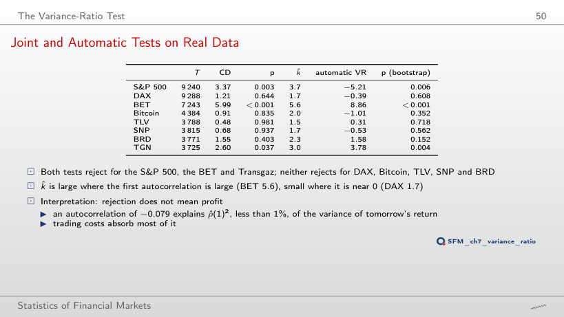
Worked example: the Chow–Denning test
Worked example: the automatic VR test
Answer
The S&P 500 and the BET. The critical value rises to 3.00, and Transgaz, with CD = 2.77, no longer exceeds it. More horizons mean more chances of a false rejection, hence a higher threshold; CD rises only if the added horizons have a larger |Z*|.
Efficiency across Markets and over Time
Sixteen Markets over the Last Ten Years
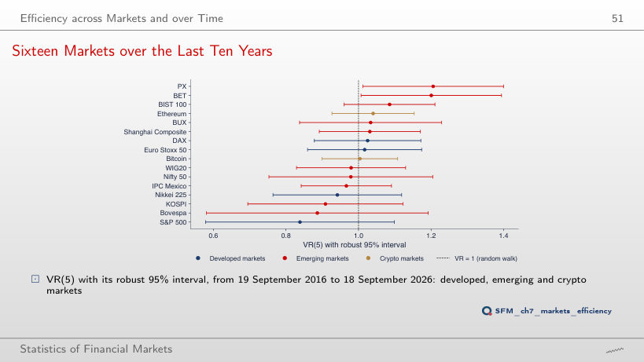
Answer
Only Ethereum (VR(20) = 1.29, Z* = 2.45); PX and the BET return inside the interval. At q = 2 it is the S&P 500 (VR(2) = 0.86, Z* = −2.33). Each horizon shows a different market: with 16 markets and many horizons, some intervals exclude 1 by chance, and the Chow–Denning test on four horizons rejects for no market.
Rolling Variance Ratios
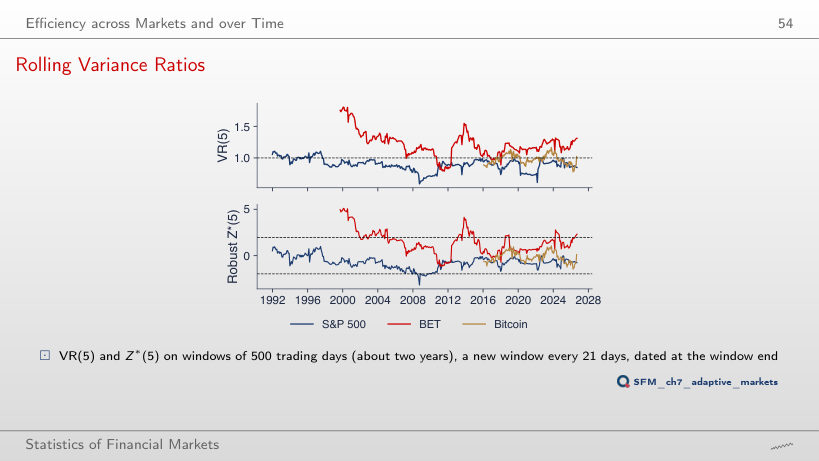
Answer
It rises to 20%, all with VR < 1. A long window estimates the same small negative autocorrelation more precisely, so it separates it from zero more easily; at 250 days the share is 1.6%. Consecutive windows share 1,479 of 1,500 days, so the share describes the data and is not a test.
Three Sub-Periods per Market
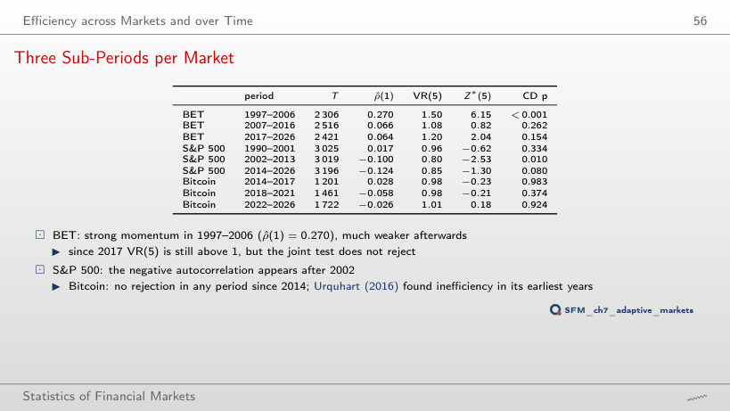
Answer
None: Z*(20) = −1.33, −1.54 and −0.91, although VR(20) = 0.72 in 2002–2013, further from 1 than VR(5) = 0.80. The variance of VR(q) grows with q, and with about 3,000 days per sub-period the robust interval becomes wide. Only the BET 1997–2006 rejects at q = 20 (Z*(20) = 5.14).
Semi-Strong Form, Strong Form and Anomalies
Day-of-Week Returns: S&P 500 and BET
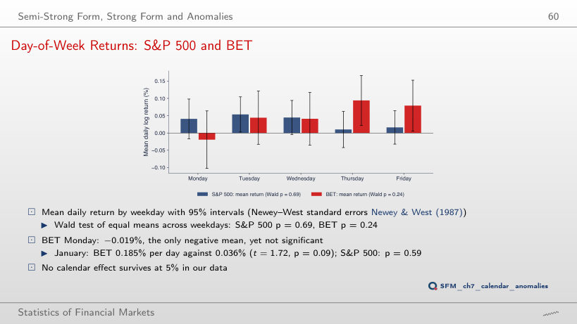
Worked example: the January effect
Answer
No: the lowest is 0.088, for the sample that starts in 2016; the S&P 500 stays above 0.62. Trying 17 different starts is itself a repeated search of the data: even a p below 0.05 at one of them would not be evidence of a day-of-week effect.
Daily log returns, in %: S&P 500 and DAX from January 1990, BET from September 1997, Bitcoin from September 2014 (7 days a week), Banca Transilvania (TLV), OMV Petrom (SNP), BRD and Transgaz (TGN) from 2010, from the adjusted price, to 18 September 2026; the two erroneous TLV days of May 2016 are removed. Cross-market comparison: 16 indices and cryptocurrencies, 19 September 2016 to 18 September 2026. EODHD closing prices. The simulated random walks, the white noise, the ARMA paths, the spurious regressions, the size simulation of Z and Z*, the ADF lag orders chosen by AIC and the wild-bootstrap p-values are those of the lecture (the same code and the same generator seed); the autocorrelations, the portmanteau and runs tests, the Dickey–Fuller regressions, PP, KPSS, the variance ratios, the Chow–Denning test, the automatic VR test, the rolling windows, the sub-periods and the calendar regressions are recomputed in the browser from the same data. Other lengths T of the spurious regression, other values α of the GARCH simulation, and other bandwidths, lags, horizons and sample starts are extra runs of the same code.